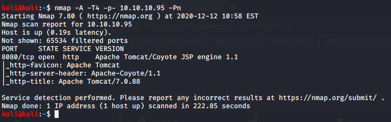

nmap scan :

this teaches us why defult credentilas are so bad
this page following isnt good to be kept open like this especially in external networks

since manager app vala button is like login page so go to google and search apache tomcat default credentials
https://github.com/netbiosX/Default-Credentials/blob/master/Apache-Tomcat-Default-Passwords.mdown
so fire up burpsuite to manually check through these passwords ka list alothough there were siftwares who could do it for us as well
for manager app added username and password as tomcat,tomcat respectively

authorization has == at the end which means its decoded as base 64 so right cl9ick on screen and press go to decoder

thus we got when in decode tab clicked decode as base 64
forwarded it bt it didnt work so try manager,tomcat
now send this to intruder as well as to repeater
so now u get as follows:

so now in response part 401 unauthorised gives us indication ki inalid credentials the apne
now trying to bruteforcing it
copying all passwords and usernaes from git and pasting into tomcat,txt
base64 format was username:password na so make it in that format now

now we ll do bash scripting

did for one now runnign a for loop to do for all na

copy these credentials into the intruder

here sekected that authorization ke baad wala part and clicked add$ wala symbol
then went to payload options and pasted the list sniper attack chosen coz attacking one at a time

the thing is = sign is there which would create issues in it as it url encodes in
now start attack
burpsuite couldnt catch this username and passowrd :
tomcat:s3cret
bt now as we know enter it and boom

tomcat application uses war files which are used to upload and deploy

so we can upload a malicious war file and get back a reverse shell
as there is a browse option se
google abt war file reverse shell
also we get info abt os version and all

https://netsec.ws/?p=331
again went here

thus ran it in our terminal

this is the manual way not the metasploit way

and now press deploy

we got this now go to /shell and boom


so still in limited flexibility so lets see how to imporve upon the shell and stuff(coz shell u got is windows sshell so stuff like hashdump and all wouldnt work na )
we ll use metaploit


now u gotta host the web server easiest way is pyhon(so that cna transfer the exe file oform ur hosted web server to that malicous machine)

thus our root is hosted online

so the shell is now hosted
so to transfer files to windows there is a tool out there bt now the defeneder picks it up
so still works on assessment
wget use kar sakte hai here user certutil

ran sh.exe


and we got it
in rela world it wuld be easily ppicked up

this was the improvement which we coulsnt get through earlier wala shell na